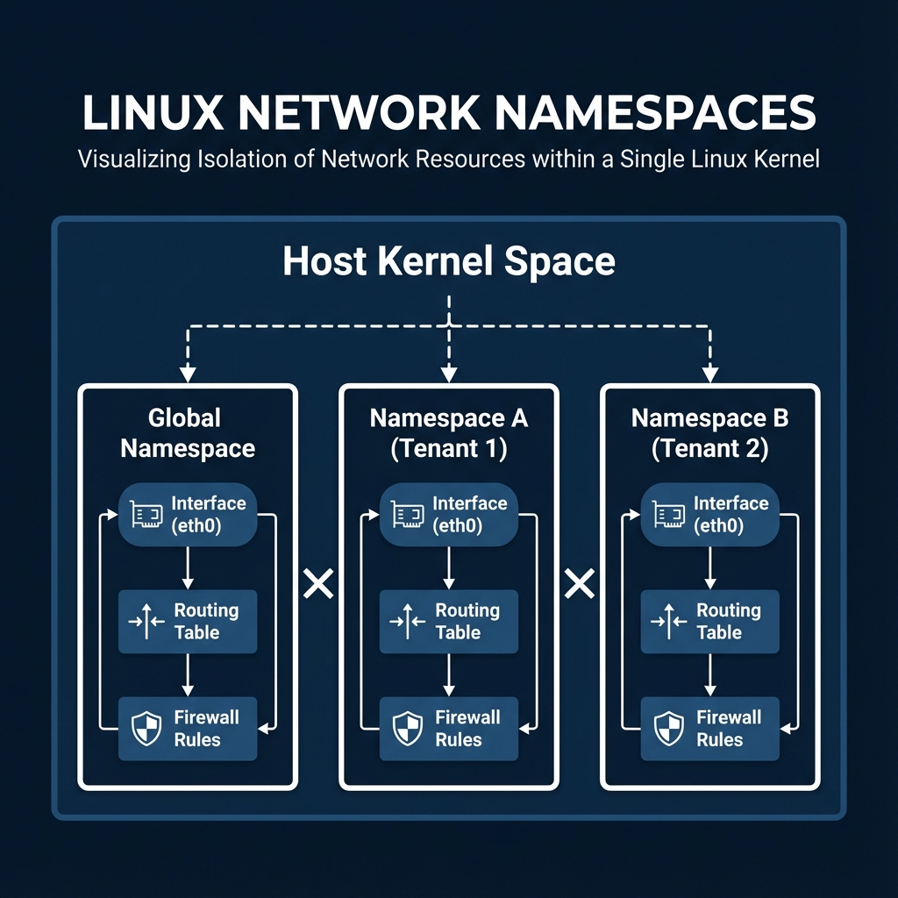

Virtual Networking and Linux Networking Fundamentals
Student NotesCourse: Computer Systems Engineering Module: Operating Systems 3 (Virtualisation & Cloud Technologies) Topic: Virtual Networking and Linux Networking Fundamentals Estimated Reading Time: 35 Minutes
[!TIP] How to succeed in this week: Networking is where VMs become useful. The concepts of bridges, NATNetwork Address Translation - Maps private to public IPs, and routing apply universally. Draw diagrams as you read—visualizing packet flow makes troubleshooting much easier later.
Welcome to Week 3!
Networking is the nervous system of any virtualized infrastructure. In a traditional data center, network engineers run physical cables, configure hardware switches, and plug in routers. In a Virtualized or Cloud environment, all of this hardware is replaced by software.
As a Cloud Engineer, you are not just managing servers; you are managing the wires between them. When a ProxmoxOpen-source virtualization platform combining KVM and LXC and LXCLinux Containers - OS-level virtualization and LXCLinux Containers - OS-level virtualization platform combining KVMKernel-based Virtual Machine - A Type 1 hypervisor HypervisorSoftware that creates and manages virtual machines" Type 1 hypervisorA bare-metal hypervisor that runs directly on hardware and LXCLinux Containers - OS-level virtualization VMVirtual Machine - A software-based emulation of a physical computer - cannot reach the internet, or when a KubernetesContainer orchestration platform orchestrationAutomated coordination of systems platform orchestrationAutomated coordination of systems platform orchestrationAutomated coordination of systems platform podSmallest deployable unit in Kubernetes orchestrationAutomated coordination of systems platform often fails to talk to a database, the problem rarely lies in the physical switch. It lies in the complex web of virtual interfaces, bridges, and namespaces inside the Linux kernel.
This week is designed to bridgeNetwork device connecting network segments the gap between "clicking a button in ProxmoxOpen-source virtualization platform combining KVM and LXC and LXCLinux Containers - OS-level virtualization and LXCLinux Containers - OS-level virtualization platform combining KVMKernel-based Virtual Machine - A Type 1 hypervisor HypervisorSoftware that creates and manages virtual machines" Type 1 hypervisorA bare-metal hypervisor that runs directly on hardware and LXCLinux Containers - OS-level virtualization " and understanding the kernel-level mechanics that make that click possible. We will dismantle the underlying abstraction and rebuild it command by command.
What You'll Learn This Week
- Linux Networking Core: Understanding the distinction between ephemeral runtime
configurations (
ip) and persistent system configurations (nmcli). - Virtual Wiring: How
vethpairs replace physical patch cables. - Virtual Switching: How Linux Bridges simulate Layer 2 switches and manage MAC address tables.
- Network Isolation: Using Namespaces to solve the "Multi-TenantGrouping of users and resources (also called Project)" problem.
- Advanced Operations: Implementing redundancy (Bonding), Routing, and Security (Firewalls).
- Software Defined Networking: An introduction to Open vSwitch (OVS).
- ProxmoxOpen-source virtualization platform combining KVM and LXC and LXCLinux Containers - OS-level virtualization and LXCLinux Containers - OS-level virtualization platform combining KVMKernel-based Virtual Machine - A Type 1 hypervisor HypervisorSoftware that creates and manages virtual machines" Type 1 hypervisorA bare-metal hypervisor that runs directly on hardware and LXCLinux Containers - OS-level virtualization Implementation: Applying these concepts to real-world VMVirtual Machine - A software-based emulation of a physical computer - networking modes.
Part 1: Linux Networking Fundamentals
ProxmoxOpen-source virtualization platform combining KVM and LXC and LXCLinux Containers - OS-level virtualization and LXCLinux Containers - OS-level virtualization platform combining KVMKernel-based Virtual Machine - A Type 1 hypervisor HypervisorSoftware that creates and manages virtual machines" Type 1 hypervisorA bare-metal hypervisor that runs directly on hardware and LXCLinux Containers - OS-level virtualization is, at its core, a Debian Linux operating system. To troubleshoot or configure it effectively, you must master Linux networking.
1. Runtime vs. Persistent Networking
(ip vs nmcli)
In the early days of Unix, network interfaces were configured using ifconfig. This tool has
been deprecated for over a decade because it cannot handle modern complexities like multiple IP
addresses per interface or policy-based routing. Today, we rely on two distinct layers of configuration.
1.1 The Kernel Layer: ip (Runtime)
The ip command is part of the iproute2 suite. It communicates directly with the
Linux Kernel via Netlink sockets. When you run an ip command, you are
modifying the direct, in-memory state of the network stack.
- Speed: Changes happen instantly (microseconds).
- Scope: Changes affect the running system only.
- Risk: Changes are lost on reboot. If you restart the server, the
kernel reloads, and your manual
ipchanges disappear.
Key Commands:
- Link Status:
ip link show(Displays MTU, MAC addresses, and UP/DOWN state). - IP Addresses:
ip addr show(Displays IPv4/IPv6 addresses attached to links). - Routing Table:
ip route get 8.8.8.8(Simulates a packet to 8.8.8.8 and tells you which interface and gateway would be used).
1.2 The Configuration Layer: nmcli
(Persistent)
To make settings permanent, we need a daemon that reads config files and applies them at boot. In modern
Linux (including RHEL/CentOS and many Debian setups), this is NetworkManager. The
command-line tool for this is nmcli.
- Profiles: NetworkManager saves settings as "Connection Profiles" (saved in
/etc/NetworkManager/system-connections/). - Logic: It handles complex logic, like "connect to Wi-Fi X when available, otherwise fall back to Ethernet Y."
- Persistence: Changes made here are written to disk and survive reboots.
Hands-On Example:
Use nmcli to set a static IP, ensuring the server always boots with the same address.
# 1. Modify the connection profile for interface 'eno1'
# Set the IP address and Subnet Mask
nmcli con mod eno1 ipv4.addresses 192.168.1.50/24
# 2. Set the Default Gateway (The router packets go to)
nmcli con mod eno1 ipv4.gateway 192.168.1.1
# 3. Disable DHCP (Method: Manual)
nmcli con mod eno1 ipv4.method manual
# 4. Apply the changes (Bounce the interface)
nmcli con up eno1
Section 1 Checkpoint
Summary:
ipcommands are runtime only (lost on reboot).nmclicommands are persistent (saved to disk).- Correct networking requires understanding both layers.
Reflection:
- Why did Linux move away from
ifconfig? - If you set an IP with
ip addr addand then reboot, what happens?
Resources:
2. Network Namespaces (The "Containers" of Networking)
In a standard Linux server, there is one global network stack. There is one routing table, one firewall, and one list of interfaces. This creates a problem for Cloud Providers: The Multi-Tenant Problem.
Understanding Linux Namespaces
A namespace is a fundamental Linux kernel feature that allows the kernel to provide a process with its
own isolated view of global system resources. While there are several types of namespaces—such as
pid (Process IDs), mnt (Mount Points), and user (User
IDs)—our primary focus here is on the Network Namespace (net).
The Network Namespace A Network Namespace provides a completely encapsulated network stack. When a process is placed inside a network namespace, it sees a unique set of:
- Network Interfaces (e.g., its own
eth0andlo). - IP Addresses (which can overlap with other namespaces).
- Routing Tables (its own default gateway).
- Firewall Rules (its own independent
iptableschains).
Even though multiple containers share the same underlying Linux Kernel, this isolation ensures they cannot see or interfere with each other's traffic.
2.1 The "Tenant Problem"
Imagine you are hosting Amazon Web Services. Customer A wants a private network using the IP range
192.168.1.0/24. Customer B also wants to use 192.168.1.0/24. On a
normal OS, you cannot have the same IP address twice. It would cause an IP conflict.
To solve this, we use Namespaces. A Network Namespace is like a parallel universe for networking. It partitions the kernel's network structures. Inside a namespace, you have a completely independent set of interfaces, routes, and firewall rules. Customer A lives in Namespace A, and Customer B lives in Namespace B. They can use identical IP addresses without ever conflicting. This is the fundamental technology behind Docker, Kubernetes orchestration platform , and LXC .
 Figure 2.1: Visualizing Isolation of Network Resources within a Single Linux Kernel.
2.2 Hands-On Example
We will create a "sandbox" namespace to demonstrate this total isolation.
# 1. Create a new namespace called "sandbox"
sudo ip netns add sandbox
# 2. Verify Isolation
# Run 'ip link' on the main host. You see all your physical cards.
ip link show
# Run 'ip link' INSIDE the sandbox. You see NOTHING (except loopback).
# The syntax is: ip netns exec <name> <command>
sudo ip netns exec sandbox ip link show
# 3. Activate the Loopback
# Ideally, every network stack needs a standard localhost (127.0.0.1)
sudo ip netns exec sandbox ip link set lo up
Section 2 Checkpoint
Summary:
- Namespaces isolate network stacks (interfaces, routes, firewalls).
- They solve the "Multi-Tenant" problem (overlapping IPs).
- They are the foundation of all Container technology.
Reflection:
- Can a process in Namespace A see the network traffic of Namespace B?
- How does this isolation improve security in a cloud environment?
Resources:
3. Connecting the Dots: Veth Pairs and Bridges
Isolation is excellent for security, but now our namespace is a digital islands. It helps no one if it cannot communicate. We need two things to fix this: a cable and a switch.
3.1 The Virtual Cable (veth)
You cannot plug a physical Ethernet cable into a software namespace. Instead, Linux provides the
Virtual Ethernet (veth) device.
A veth pair is always created as two connected interfaces—a "pipe." Packets sent into
Interface A instantly arrive at Interface B, and vice versa. This allows us to tunnel traffic from the
Global Host namespace into the isolated "sandbox" namespace.
Hands-On Example: Connecting the Sandbox to the Host.
# 1. Create the pair. We name the ends specifically to avoid confusion.
# 'veth-host' will stay on the outside. 'veth-sandbox' will go inside.
sudo ip link add veth-host type veth peer name veth-sandbox
# 2. Move one end through the "portal" into the namespace
sudo ip link set veth-sandbox netns sandbox
# 3. Configure IPs (The Host side is the Gateway; The Sandbox side is the Client)
# Host Side: 10.0.0.1
sudo ip addr add 10.0.0.1/24 dev veth-host
sudo ip link set veth-host up
# Sandbox Side: 10.0.0.2
sudo ip netns exec sandbox ip addr add 10.0.0.2/24 dev veth-sandbox
sudo ip netns exec sandbox ip link set veth-sandbox up
# 4. Test Connectivity
sudo ip netns exec sandbox ping 10.0.0.1
3.2 The Virtual Switch (bridge)
Connecting two points with a veth is easy. But what if you have 50 Containers? You cannot
create a mesh of cables between every single one. You need a device to connect them all to a central
point.
A Linux Bridge is a software implementation of a standard Ethernet Switch. It operates
at Layer 2 (Data Link Layer).
- MAC Learning: The bridge listens to incoming frames. If it sees a packet from MAC
AA:BB:CCcoming from Port 1, it records this in a table. - Forwarding: If it later receives a packet destined for
AA:BB:CC, it looks up the table and sends it only to Port 1. This reduces traffic congestion compared to a "Hub" which broadcasts everything.
How devices plug in:
- Containers: Use
vethpairs (as discussed in 3.1). - Virtual Machines: Use TAP Interfaces. A
tapdevice simulates an Ethernet device at Layer 2. QEMU - Type 1 hypervisor for virtualization /KVM - Type 1 hypervisor creates atapinterface (e.g.,tap100i0) for the VM - , and the other end connects to the Bridge. This allows the VM - to send raw Ethernet frames onto the switch.
Example: Manually creating a TAP interface (What Proxmox platform combining KVM - Type 1 hypervisor and LXC does behind the scenes)
# 1. Create the TAP interface
sudo ip tuntap add dev tap0 mode tap
# 2. Plug it into the Bridge
sudo ip link set tap0 master br0
sudo ip link set tap0 up
Hands-On Example: Connecting Two Namespaces (Red & Blue) We will act as a "Virtual Switch" administrator. We want to connect two isolated namespaces so they can talk to each other.
-
Create the Bridge (The Switch):
bash sudo ip link add name br0 type bridge sudo ip link set br0 up -
Create the "Computers" (Namespaces):
bash sudo ip netns add red sudo ip netns add blue -
Create the Cables (Veth Pairs): We need two cables. One for Red, one for Blue.
- Cable 1:
veth-red(Switch side) <->veth-red-ns(Computer side) - Cable 2:
veth-blue(Switch side) <->veth-blue-ns(Computer side)bash sudo ip link add veth-red type veth peer name veth-red-ns sudo ip link add veth-blue type veth peer name veth-blue-ns
- Cable 1:
-
Plug them in (Wiring):
- Plug the "NS" ends into the namespaces.
- Plug the other ends into the Bridge (
master br0).
# Wiring Red
sudo ip link set veth-red-ns netns red
sudo ip link set veth-red master br0
sudo ip link set veth-red up
# Wiring Blue
sudo ip link set veth-blue-ns netns blue
sudo ip link set veth-blue master br0
sudo ip link set veth-blue up
- Configure IPs (Inside Namespaces):
# Red Computer: 192.168.50.1
sudo ip netns exec red ip addr add 192.168.50.1/24 dev veth-red-ns
sudo ip netns exec red ip link set veth-red-ns up
# Blue Computer: 192.168.50.2
sudo ip netns exec blue ip addr add 192.168.50.2/24 dev veth-blue-ns
sudo ip netns exec blue ip link set veth-blue-ns up
- Test Connectivity:
Ping Blue from Red. The packet goes:
Red -> veth -> br0 -> veth -> Blue.
sudo ip netns exec red ping -c 3 192.168.50.2
Section 3 Checkpoint
Summary:
vethpairs act as virtual cables connecting namespaces.- Linux Bridges act as virtual switches, forwarding frames based on MAC addresses.
- We can build complex topologies entirely in software.
Reflection:
- If you forget to "plug" the veth into the bridge (
master br0), what happens? - Why do we need two ends to a veth pair?
Resources:
4. Container Networking in Practice (Docker, Podman, LXC )
In Week 3, we discussed containers. Now we see how they use the Linux networking primitives we just learned.
4.1 Docker (The Standard Bridge)
When you install Docker, it creates a Linux Bridge named docker0.
- The Bridge:
docker0(Usually 172.17.0.1/16). - The Veth: Every time you run
docker run, Docker creates avethpair. One end sits on the host (plugged intodocker0), the other sits inside the container. - The Namespace: The container is just a process running inside a network namespace.
CLI Comparison:
| Action | Manual Linux Command | Docker Command |
|---|---|---|
| Create Net | ip link add br0 type bridge |
docker network create mynet |
| Create NS | ip netns add container1 |
docker run --name container1 ... |
| Connect | ip link set veth master br0 |
Auto-connected to docker0 or custom net |
4.2 Podman (Rootless Networking)
Podman often manages containers without root privileges. Standard bridges require root. How does it work?
- slirp4netns: Podman uses a User-Space networking stack. It "slurps" traffic from the host interface and pipes it into the container namespace without touching the kernel's actual bridge settings.
- Performance: Slightly slower than Docker's bridge, but much more secure.
4.3 LXC (System Containers)
LXC is closer to Proxmox platform combining KVM - Type 1 hypervisor and LXC 's approach. It typically
uses lxcbr0.
- Unlike Docker, LXC networking is defined in a config file. By default, it connects
to
lxcbr0and requests an IP via DHCP, just like a physical computer would.
# 1. Create a container
sudo lxc-create -n my-container -t download -- -d ubuntu -r focal -a amd64
# 2. View the Network Config (How does it get an IP?)
# You will see: lxc .net.0.type = veth
# You will see: lxc .net.0.link = lxcbr0
cat /var/lib/lxc/my-container/config
# 3. Start the container (It creates the veth and asks for DHCP)
sudo lxc-start -n my-container
# 4. Check the assigned IP
sudo lxc-info -n my-container
Section 4 Checkpoint
Summary:
- Docker automates the creation of Bridges (
docker0) and Veth pairs. - Podman uses
slirp4netnsfor rootless, secure networking. - LXC behaves more like traditional VMs on the network.
Reflection:
- Why is "Rootless" networking considered more secure?
- How does
docker network createsimplify what we did in Section 3?
Resources:
5. Advanced Linux Operations
Mastering the basics is enough to build a lab, but production environments require robustness, redundancy, and security.
5.1 Link Aggregation (Bonding/LACP)
Hardware fails. Cables get cut, SFP modules burn out, and switch ports die. If your Hypervisor is connected via a single cable, you have a Single Point of Failure (SPOF).
Bonding allows you to combine multiple physical interfaces (e.g., eno1 and
eno2) into a single virtual interface (bond0).
- Mode 1 (Active-Backup): Only one cable is used. If it fails, the traffic flips to the second cable. Simple, but wastes 50% bandwidth.
- Mode 4 (802.3ad LACP): The Gold Standard. The server and switch communicate to balance traffic across both cables simultaneously. You get double the speed and redundancy.
Configuration:
# 1. Create the Bond Interface
nmcli con add type bond con-name bond0 ifname bond0 mode 802.3ad
# 2. Enslave Physical NICs to the Bond
nmcli con add type ethernet slave-type bond con-name bond0-eno1 ifname eno1 master bond0
nmcli con add type ethernet slave-type bond con-name bond0-eno2 ifname eno2 master bond0
# 3. Bring up the Bond
nmcli con up bond0
5.2 IP Forwarding & Routing
A Linux server usually behaves like an End Host—it consumes packets sent to it and ignores the rest. However, in virtualization (specifically NAT Mode), the Linux host must act as a Router. It needs to accept packets from VMs and forward them to the Internet.
To do this, we must toggle a specialized kernel parameter: ip_forward. We also need to
manipulate the Routing Table to tell the kernel where networks live.
Commands:
# Check status (0 = Disabled, 1 = Enabled)
cat /proc/sys/net/ipv4/ip_forward
# Enable Forwarding Temporarily
sysctl -w net.ipv4.ip_forward=1
# Add a Static Route
# "Traffic for 10.99.0.0/24 should be sent to the gateway at 192.168.1.254"
sudo ip route add 10.99.0.0/24 via 192.168.1.254
5.3 The Linux Firewall (iptables)
Security in the cloud isn't just about an external firewall appliance. Every Linux kernel has a built-in
firewall called Netfilter. We manipulate it using iptables. It processes
packets in "Chains":
1. INPUT: Filters traffic destined for the localhost.
2. OUTPUT: Filters traffic created by the localhost.
3. FORWARD: Filters traffic passing through the localhost (e.g., VM - to
Internet traffic).
Hands-On Example: securing a host.
# 1. Allow "Established" traffic
# If we sent a request out, allow the reply back in. Essential!
sudo iptables -A INPUT -m state --state ESTABLISHED,RELATED -j ACCEPT
# 2. Allow SSH (Port 22) so we can manage the server
sudo iptables -A INPUT -p tcp --dport 22 -j ACCEPT
# 3. Drop Everything Else
# This is the "Default Deny" posture. If it's not explicitly allowed, kill it.
sudo iptables -P INPUT DROP
Modern Frontends: firewalld vs iptables
While iptables (and its successor nftables) is the low-level tool, managing
thousands of rules manually is hard. Modern distros use "Frontend Controllers":
- RHEL/CentOS/Fedora: Use
firewalld. It organizes rules into "Zones" (Public, Home, Work).
# 1. Check which zone is active
sudo firewall-cmd --get-active-zones
# 2. Allow HTTP traffic permanently
sudo firewall-cmd --permanent --add-service=http
# 3. Allow a specific port (e.g., 8080)
sudo firewall-cmd --permanent --add-port=8080/tcp
# 4. Reload to apply changes
sudo firewall-cmd --reload
- Debian/Ubuntu: Often use
ufw(Uncomplicated Firewall).
# 1. Check status (Inactive by default)
sudo ufw status
# 2. Allow SSH first (Important!)
sudo ufw allow ssh
# 3. Allow specific ports
sudo ufw allow 80/tcp
sudo ufw allow 8080/tcp
# 4. Enable the firewall
sudo ufw enable
These tools write the underlying iptables/nftables rules for you.
5.4 Network Reconnaissance (ss &
nmap)
Before you can analyze traffic, you often need to know what ports are open or who is listening.
Socket Statistics (ss)
ss is the modern replacement for the deprecated netstat. It allows you to see
which processes on your server are listening for connections.
# Show all Listening (l) TCP (t) and UDP (u) ports with Numeric (n) values and Process names (p)
sudo ss -tulpn
Network Mapper (nmap)
nmap is the industry standard for network discovery. Unlike ss (which looks
locally), nmap allows you to scan remote servers to see what they are exposing.
# Scan a target IP to see open ports
nmap 192.168.1.50
5.5 Traffic Analysis (tcpdump)
When networking breaks, it often fails silently. A firewall drops a packet without an error message. A route sends traffic into a black hole. To fix this, we need Packet Capture.
tcpdump is the CLI version of Wireshark. It puts the network card into "Promiscuous Mode,"
allowing it to see every packet on the wire, not just those addressed to it.
Commands:
# Basic Capture: Listen on interface 'vmbr0' for Port 80 (HTTP)
sudo tcpdump -i vmbr0 port 80
# Source Filtering: Show traffic only from a specific "Bad IP"
sudo tcpdump -i vmbr0 src 10.0.0.5
# File Capture: Save packets to a file for detailed analysis in Wireshark later
sudo tcpdump -i vmbr0 -w crash_report.pcap
Section 5 Checkpoint
Summary:
- Bonding aggregates links for redundancy (Active/Backup) or speed (LACP).
- Routing allows a Linux host to act as a Gateway.
- IPTables controls traffic flow (Input, Output, Forward).
- SS/Nmap allow you to discover open ports and listening services.
- Tcpdump allows us to see the actual packets on the wire.
Reflection:
- If you have a Bond with 2 cables and one is cut, does the server go offline?
- Why do we need
ip_forward=1for NAT?
Resources:
Part 2: Virtual Networking in Proxmox platform combining KVM - Type 1 hypervisor and LXC
Now that we have dismantled the Linux kernel concepts, we can look at how Proxmox platform combining KVM - Type 1 hypervisor and LXC Virtual Environment (PVE) uses them to manage VM - networking. Proxmox platform combining KVM - Type 1 hypervisor and LXC does not invent its own networking stack; it "orchestrates" standard Linux tools (Bridges, OVS, IPTables) via a web interface.
6. Open vSwitch (OVS): The Cloud Switch
While the standard Linux Bridge is reliable and simple, it was designed for a single server. It lacks the intelligence required for massive, multi-tenant clouds. Open vSwitch (OVS) is an industrial-grade, programmable virtual switch used by giants like OpenStack platform , Red Hat, and Citrix.
6.1 Architecture: Control Plane vs. Data Plane
Unlike a physical dumb switch, OVS is split into two parts:
1. Userspace (Control Plane): ovs-vswitchd and ovsdb-server
handle the database and logic. This is where you configure "Flows" and "Ports".
2. Kernel Module (Data Plane): This handles the actual packet switching at wire speed.
It caches decisions made by the Control Plane so that future matching packets don't need to check the
database again.
6.2 Installing OVS
Unlike the standard bridge, OVS is not always installed by default.
# Ubuntu/Debian
sudo apt update
sudo apt install openvswitch-switch
# Start the service
sudo systemctl enable --now openvswitch-switch
# Verify
sudo ovs-vsctl show
6.3 The Power of Flows
Standard bridges forward based on MAC addresses. OVS forwards based on Flow Rules. A flow rule matches a packet's header fields and performs an action.
Example Scenario: You want to block a specific "Bad Neighbor" VM - (IP 10.0.0.66) from sending traffic, but allow everything else.
- Linux Bridge: Cannot do this natively (needs complex iptables).
- OVS: One simple command.
# 1. Create a programmable bridge
# This creates a virtual switch that listens for OpenFlow commands.
ovs-vsctl add-br ovsbr0
# 2. Add a Flow Rule to DROP traffic from specific source IP
# "If a packet comes from 10.0.0.66, DROP it explicitly."
ovs-ofctl add-flow ovsbr0 "ip,nw_src=10.0.0.66 actions=drop"
# 3. Add a fallback rule (Normal Switching)
# "If no other rules match, behave like a normal L2 Switch."
ovs-ofctl add-flow ovsbr0 "priority=0 actions=NORMAL"
6.4 SDN Controller Integration
OVS is designed to be controlled remotely by an SDN Controller (like OpenDaylight or ONOS). This allows a central brain to program the switches across the entire datacenter.
# Point the switch to a Controller IP
ovs-vsctl set-controller ovsbr0 tcp:192.168.56.10:6653
Section 6 Checkpoint
Summary:
- OVS is a programmable, carrier-grade virtual switch.
- It separates the Control Plane (Logic) from the Data Plane (Forwarding).
- It uses "Flows" instead of just MAC tables, allowing for complex logic (Drop IP X, Redirect Port Y).
Reflection:
- How does OVS differ from a standard Linux Bridge?
- What is the role of an SDN Controller?
Resources:
7. Proxmox platform combining KVM - Type 1 hypervisor and LXC Networking
Proxmox platform combining KVM - Type 1 hypervisor and LXC VE is not a "black box." It is simply a Debian Linux host with a nice web interface. Every networking button you click in the GUI corresponds directly to the Linux commands we learned in Part 1.
| Proxmox platform combining KVM - Type 1 hypervisor and LXC GUI Term | Underlying Linux Technology |
|---|---|
Linux Bridge (vmbr0) |
Standard bridge (Section 3.2) |
Bond (bond0) |
Linux Bonding (Section 5.1) |
| VLAN Tag | vlan interface or Bridge VLAN Filtering (Section 7.3)
|
| Firewall | iptables / nftables (Section 5.3) |
When you start a VM - , Proxmox platform combining KVM - Type 1 hypervisor and LXC creates a dynamic
tap interface (e.g., tap100i0) and plugs it into the bridge
(vmbr0), exactly like we plugged in veth pairs in the Lab.
7.1 Networking Modes
When configuring a VM - 's hardware, you choose how it connects to the bridge. We primarily see three patterns.
 *Figure 7.1: Comparison of Bridged vs. NAT vs. VLAN Modes.*1. Bridged Mode (Default)
This is the standard configuration for 90% of deployments. The VM - becomes a full peer on the physical network.
Packet Flow:
[VM eth0] -> [Host tap100i0] -> [Linux Bridge vmbr0] -> [Physical NIC eno1] -> [Physical Switch]
Detailed Configuration:
In /etc/network/interfaces, a Bridge looks like this:
auto vmbr0
iface vmbr0 inet static
address 192.168.1.10/24
gateway 192.168.1.1
bridge-ports eno1 # This links the bridge to the physical cable
bridge-stp off
bridge-fd 0
Implication:
- DHCP: The VM - sends a broadcast
DISCOVERpacket. It traverses the bridge, hits the physical wire, and reaches your office router. The router assigns an IP directly to the VM - . - Visibility: Every device on your LAN can ping the VM - .
2. NAT Mode (Network Address Translation)
Sometimes you cannot get extra public IPs (e.g., in a data center giving you only 1 IP). You need to create a private network inside the host and share the single public IP.
Packet Flow:
[VM eth0] -> [Host tap100i0] -> [Private Bridge vmbr1] -> [Host Routing/NAT] -> [Physical NIC eno1] -> Internet
Detailed Configuration:
This mode requires Masquerading (Source NAT) in iptables.
# In /etc/network/interfaces
auto vmbr1
iface vmbr1 inet static
address 10.10.10.1/24 # The Host acts as the Gateway for VMs
bridge-ports none # NOT connected to any physical card
bridge-stp off
bridge-fd 0
# 1. Enable forwarding
post-up echo 1 > /proc/sys/net/ipv4/ip_forward
# 2. Masquerade traffic leaving the physical interface (eno1)
# "If traffic comes from 10.10.10.0/24, replace Source IP with Host IP"
post-up iptables -t nat -A POSTROUTING -s 10.10.10.0/24 -o eno1 -j MASQUERADE
post-down iptables -t nat -D POSTROUTING -s 10.10.10.0/24 -o eno1 -j MASQUERADE
3. VLAN Tagging (802.1Q)
VLANs allow multiple logical networks to share one physical cable. To do this, we insert a 4-byte "Tag" into the Ethernet Frame Header.
Processing Flow:
-
Ingress (VM - -> Host):
The VM - sends a standard "untagged" packet. -
Tagging:
As the packet enters the bridge port (configured withtag=20), Proxmox platform combining KVM - Type 1 hypervisor and LXC inserts the VLAN ID 20. -
Transit:
The bridge sees the packet belongs to VLAN 20 and forwards it only to ports that are members of VLAN 20 (including the uplink).
3.1 Configuring VLANs manually (Linux CLI):
You can create VLAN interfaces on standard Linux without a bridge using the ip command. This
creates a virtual interface that automatically tags/untags packets.
# Create a VLAN 10 interface on top of eno1
# Packets sent to 'eno1.10' will leave physical 'eno1' with Tag 10.
sudo ip link add link eno1 name eno1.10 type vlan id 10
sudo ip addr add 192.168.10.1/24 dev eno1.10
sudo ip link set eno1.10 up
Egress (Host -> Switch): The packet leaves eno1 with the tag attached.
The physical switch reads "20" and puts it in the correct broadcast domain.
VLAN Aware Bridge:
Modern Proxmox platform combining KVM - Type 1 hypervisor and LXC uses "VLAN Aware" bridges. Instead of
creating vmbr0.10, vmbr0.20, etc., you toggle
bridge-vlan-aware yes. The bridge then acts like a "Trunk Port", capable of carrying all
VLANs simultaneously.
Section 7 Checkpoint
Summary:
- Proxmox platform combining KVM - Type 1 hypervisor and LXC uses standard Linux Bridges and IPTables underneath the GUI.
- Bridged Mode: VM - is on the LAN. Simplest.
- NAT Mode: VM - is hidden behind the Host. Requires Masquerading.
- VLANs: Isolate traffic on the same physical wire using Tags.
Reflection:
- If you are in a Data Center with only 1 Public IP, which mode MUST you use?
- How does a switch know which VLAN a packet belongs to?
Resources:
8. Additional Resources
- Linux Bonding Guide: Red Hat Documentation
- Tcpdump Cheat Sheet: PacketLife
- Proxmox platform combining KVM - Type 1 hypervisor and LXC Networking: Official Wiki
9. Lab Exercises
- Lab 1: Linux Networking
- Goal: Hands-on with ip commands, bridges, and routing.
- Lab 2: Proxmox Networking
- Goal: Configuring Bridges, Bonds, and VLANs in Proxmox platform combining KVM - Type 1 hypervisor and LXC VE.
Test Your Knowledge
Ready to check your understanding of this week's material? Take the interactive quiz now!
Start Quiz